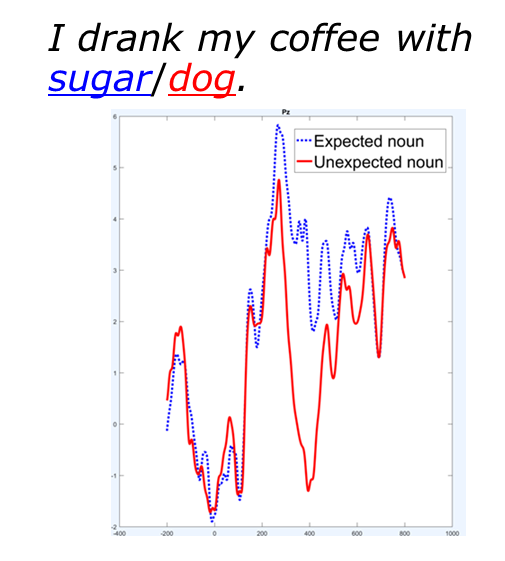
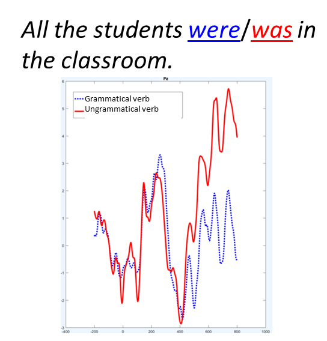
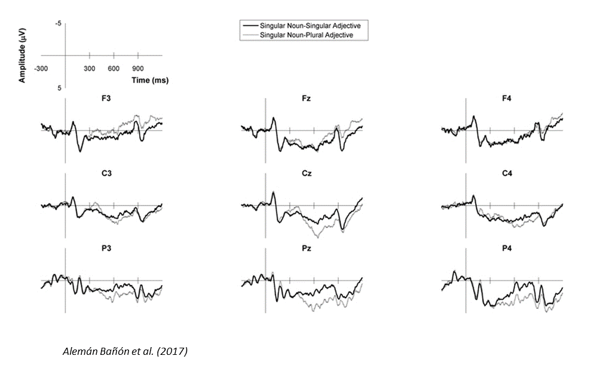
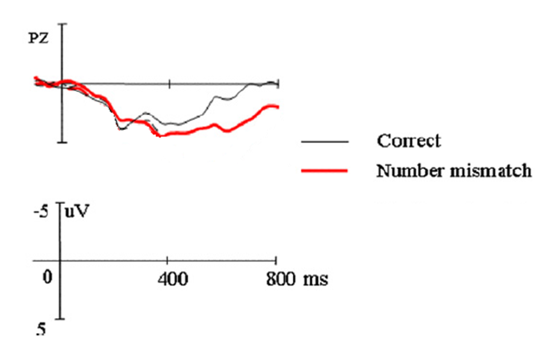
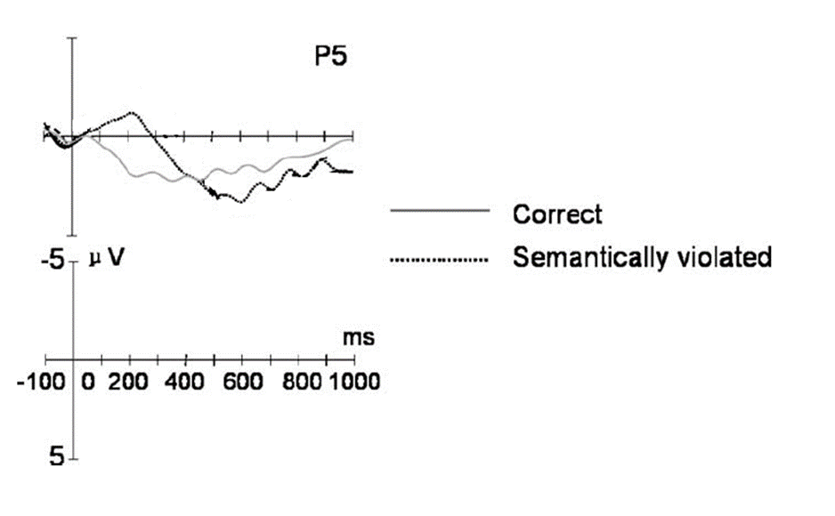
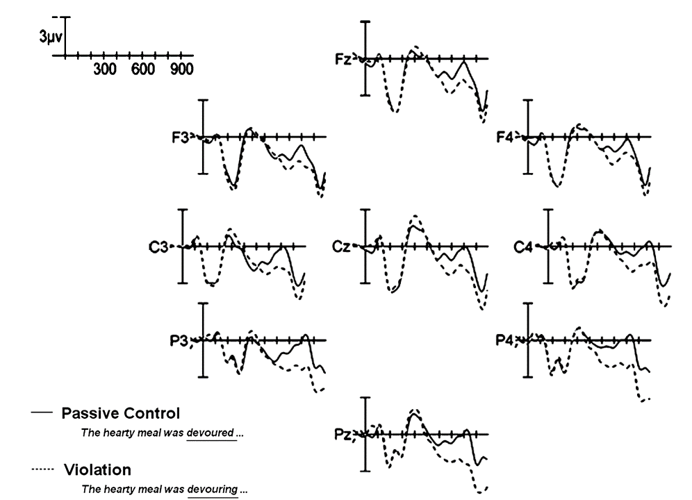

Look at the pairs of sentences below. What is the difference between (1a) and (1b), and what is
the difference between (2a) and (2b)?
I drink my coffee with cream and sugar.
I drink my coffee with cream and dog.
All the students were in the classroom.
All the students was in the classroom.
Hopefully you noticed that the difference between the first pair of sentences is one of plausibility
(sugar is a word that plausibly fits in that sentence, whereas dog is not), whereas the difference
between the second pair of sentences is one of grammaticality (were agrees with the plural subject
of the sentence, whereas was does not.)
It turns out that these phenomena are associated with different ERP patterns as well. When people read
or hear a word that is implausible or unexpected in the context, like dog in I drink my coffee with cream
and dog, this tends to elicit a more negative ERP (compared to a word that is plausible and expected in
the context, like sugar) about 400 milliseconds after hearing the word, as shown in the figure below. This
effect (specifically, the difference between the ERP elicited by the less plausible word and the ERP elicited by
the more plausible word), is called the "N400" ("N" for negative, "400" for 400 ms, the latency at which this
effect tends to be strongest).

On the other hand, reading a word that is not grammatical in the context, like was in All
the students was in the classroom tends to elicit a more positive ERP (compared to a word that is grammatical
in the context, like were) about 600 milliseconds after hearing the word, as shown in the figure below.
This effect is called, accordingly, the "P600".

Based on these differences we've seen, you should be able to try to predict what kind of ERP response
will be elicited for various sentences. Let's give it a try.
First we'll look at some sentences from Alemán-Bañón
and colleagues (2017). Before looking at these sentences, you need to know a tiny bit of background about Spanish grammar:
in Spanish, adjectives have to agree with nouns in terms of their number. This is a feature English doesn't have. In English
we have this with demonstratives (e.g., a plural noun like dogs needs a plural demonstrative like these or
those, not a singular one like this or that; that's why these/those dogs is grammatical
whereas *this/that dogs is not), but adjectives don't care about singular or plural; i.e. we use the same adjective
black to say either black dog(singular) or black dogs (plural). In Spanish, however, if a noun
is plural, any adjective describing it also must be plural; it would be like saying blacks dogs. Now, let's look
at some of the sentences Alemán-Bañón and colleagues used in their ERP experiment:
Andrés
alquiló
un
coche
que
parecía
barato
Andres
rented
a
car
that
looked
cheapꜱɪɴɢᴜʟᴀʀ
Andrés
alquiló
unos
coches
que
parecían
barato
Andres
rented
some
cars
that
looked
cheapꜱɪɴɢᴜʟᴀʀ
What do you expect the ERPs elicited by these sentences (specifically, by barato in each sentence)
to look like? After you've thought about it, click below to reveal the answer.

This figure is a bit more complicated than the ones we've seen so far, because it's showing the ERP waves at many different
places over the head instead of just at one place. However, if you look at the middle of the head (the "C" row) or back of the
head (the "P" row), you will see that the the light gray line (the ungrammatical adjective) elicits a more positive ERP
than the dark black line (the grammatical adjective), particularly around 600 ms after seeing the word. (Note that in this
figure, as in many ERP figures, the scale is upside-down; negative is plotted upwards and positive downards. This is shown in the
upper left corner of the graph.)
This is a classic P600 effect.
Now let's look at another pair of sentences, this time from Xu
et al. (2013):
這位
女患者
情緒
低落
，
醫生
鼓勵
她
振作起來
。
this
female.patient
mood
low
doctor
encouraged
her
cheer up
"This patient was in low spirits, the doctors encouraged her to cheer up"
這些
女患者
情緒
低落
，
醫生
鼓勵
她
振作起來
。
these
female.patient
mood
low
doctor
encouraged
her
cheer up
"These patients were in low spirits, the doctors encouraged her to cheer up"
Again, think about what you expect the ERPs elicited by "her" in these two sentences to show, and then
click below to reveal the answer.

This figure, like the previous one, shows negative plotted upwards and positive downwards. The red line represents
the ERP elicited by "her" in the condition where it doesn't match the plural antecedent, and the black line
represents the ERP elicited by "her" when it does match the singular antecedent. The red line, for the mismatch condition,
is lower (more positive) than the black line for the match condition. This difference seems to be biggest 400-800 milliseconds
after seeing the word.
This is also a classic P600 effect.
Now let's consider another example, this time from Ye
et al. (2006). To understand these, you need to know that Chinese has a function word 把 (glossed BA), which
introduces an object in an SOV structure. The default sentence structure in Chinese is SVO (subject-object-verb), but SOV
(subject-verb-object) is possible with this BA. In other words, a Chinese sentence can look like "I ate the apple",
or "I BA the apple ate"; these mean roughly the same thing.
設計師
制作
新衣
，
把
布料
裁
了
。
designer
make
new clothes
BA
cloth
cut [fabric]
[perfective aspect marker]
"The designer was making new clothes, and cut the cloth."
伐木工
開採
森林
，
把
松樹
裁
了
。
lumberjack
extract.resources.from
forest
BA
pine tree
cut [fabric]
[perfective aspect marker]
"The lumberjack was harvesting the forest, and cut the pine tree."
(Note that the verb 裁, while translated as "cut", is only used for cutting stuff like fabric, e.g. with
scissors. The sort of cutting involved in, e.g., chopping down trees, uses a different verb.) Again, think about what you expect
the ERPs elicited by "her" in these two sentences to show, and then click below to reveal the answer.

Here we have a messier situation. The thin gray line represents the ERP for "cut" in the correct context, and the thick
dotted black line represents the ERP for "cut" in the context it doesn't fit (descring chopping a tree rather than cutting
cloth). Based on what you read at the beginning of this activity, you might have predicted an N400 for this comparison. But
the results are not so clear-cut. The ERP for "cut" when it doesn't fit the context is indeed more negative than the ERP
for "cut" when it does fit the context, but this only happens for about the first 200 milliseconds after hearing the word.
This might be an early N400 (although the authors of the paper were hesitant to claim that). But later, from at least
400-1000 milliseconds after hearing the word, the ERP for the implausible "cut" is actually more positive than
the ERP for the plausible "cut".
What it actually looks like here is that there is both an N400 effect and a P600 effect.
If you're following along carefully, you may have noticed that these results challenge what you read
at the beginning of the activity. Based on what you read at the beginning of the activity, you may have assumed that
grammar errors elicit P600 effects, whereas violations of plausibility or expectations elicit N400 effects. But
that doesn't seem to be the full story, because here we see one manipulation (an implausible/unexpected verb)
which seems to elicit both an N400 and a P600. There are two different conclusions we might make from this.
We could conclude that Chinese works differently than English somehow, i.e. that meaning and plausibility are fundamental
parts of "grammar". (That is in fact the claim that Ye and colleagues [2006] make, although I don't really agree with it.)
Or we could conclude that our understanding so far of the N400 and P600, based on what I said at the beginning of this
activity, is wrong, or at least is not the full story. (In the last activity of this module you will have an
opportunity to read a paper by Bornkessel-Schlesewsky and colleagues which integrates both of these conclusions; it
basically says that the N400 and P600 do indeed represent something more nuanced than just "grammar" versus "plausibility",
and that languages differ in which kind of ERP effects they have based on the different ways that languages
mark certain kinds of information.)
Now let's try one last example, from Kim
and Osterhout (2005). What do you think the ERPs here will look like?
The hearty meal was devoured by the kids.
The hearty meal was devouring the kids.

Here, like in the Spanish study, we have ERPs for several places across the head. The important pattern is easiest
to see at Pz, which is in the middle back of the head (the bottom center of this figure). Here, devouring
elicits a more positive ERP than devoured, especially around 600 milliseconds; in other words, this
looks like a P600 effect.
This last result may look surprising. The hearty meal was devouring the kids is a perfectly
grammatical sentence; it has no grammatical error. The problem with it is plausibility (we know that meals don't usually
devour kids). Based on what you've seen so far, you might then expect that it would elicit an N400, since we said
above that plausibility violations tend to elicit N400s. Why did this elicit P600 instead?
This shows that there is a fundamental problem with assuming that certain linguistic phenomena (like
grammar, syntax, semantics, plausibility, morphology, or whatever) are associated with ERP components. People often
like to say that the N400 is elicited by "semantic" violations and the P600 by "syntactic" violations, but that is
clearly not the full story; here we have a sentence with no syntactic problem and only a plausibility problem, and
yet it elicits a P600 rather than an N400. This experiment, and others reporting a similar effect (which at the
time was sometimes called the "semantic P600"), was very influential for just this reason; it highlighted that we
need to think about ERPs in a more nuanced way.
Instead of paying attention to what kind of violation there actually is in the sentence,
let's instead pay attention to what the language processing system in our mind might do when faced like a
sentence like this. To make that more concrete: think about how you might try to correct this sentence as you are
reading it, i.e., what you might identify as the "problem" with this sentence.
There are actually two things your language processing system might do. It might assume, as I assumed
in the discussion above, that there is a problem with the plausibility of this sentence. In other words, your language
system might trust that the syntactic structure of this sentence is right, and that the problem is that the sentence
has a weird meaning (it's weird for a meal to devour kids). Thus, the way to "correct" the sentence in this situation
would be to put in a different verb (e.g., maybe something like "The hearty meal was tempting the kids.").
On the other hand, though, your language processing system might instead assume there is a problem with
the syntax of the sentence. In other words, your language system might trust that the general meaning of the sentence
is normal and plausible, and instead there's just a grammatical error, sort of a typo. It might assume that the only
error in the sentence is accidental use of passive voice (verb-ed by) rather than active voice (verb-ing). In that case,
the way to "correct" the sentence would be to keep "devour", but just fix the suffix (change it to "devouring" instead
of "devoured by").
If your language system chooses to trust the syntax and interpret this sentence as having a weird meaning
we might expect it to throw an N400 at us (under the assumption that implausible/unexpected words elicit an N400). On the
other hand, if your language system chooses to trust the meaning and instead interpret the sentence as having a grammatical
error, we might expect it to throw a P600 at us (under the assumption that grammatical errors elicit a P600). What we see
from the above results is that the latter possibility seems to be the true one: even though the sentence doesn't have a
grammar error, the language processing system acts as if it does, because it trusts the meaning over the grammar that it
sees.
There are many other nuances to this situation; there are other languages, and other situations, in which
there are N400s (or both P600s and N400s) for these kinds of sentences. There is still debate over what these patterns
mean for our understanding of how language works and our understanding of how ERPs work. So, the story I have just told
might not be the right story. But regardless of what the right story ends up being, I think this example is very instructive
for teaching us that we shouldn't just think about ERPs as products of things like "syntax" or "semantics", but that we have
to think more carefully about what actual processes the mind is going through as it attempts to understand language.
The kind of sentence from the Kim & Osterhout paper (e.g. The hearty meal was devouring the kids)
has what is often called a semantic reversal anomaly, because it involves "reversing" who usually does what to
whom (usually kids eat meals, but this sentence is saying the meal eats the kids). To finish this task, find one other
experiment examining what kind of ERP is elicited by a semantic reversal anomaly, and summarize it in 250 words or less.
Some papers include multiple experiments; you can just summarize one experiment. To find experiments, you can search
online (using e.g., Google Scholar), or you can start from some known papers on this phenomenon and search outwards
(by checking related papers that these papers cite, or by checking more recent papers that cite this paper; in Google
Scholar you can look up a given paper and then see all the papers that cite it). As a starting point, I recommend either
of the below papers by Wing Yee Chow, which are both interesting and easy to read:
Remember that, to complete this module, you need to do three of the extra activities, and they should cover at
least two different neurolinguistic methods (i.e., you can't pass the module by just doing three tasks about EEG). If you haven't finished
three yet, you can choose another from the list below:
When you have finished three extra activities, you are done with the module (assuming all your work on this and the
previous tasks has been satisfactory). If you are interested in leading a discussion on this module, you can go on
to see the suggested discussion topics. Otherwise, you can return
to the module homepage to review this module, or return to the class homepage to select a
different module or assignment to do now.